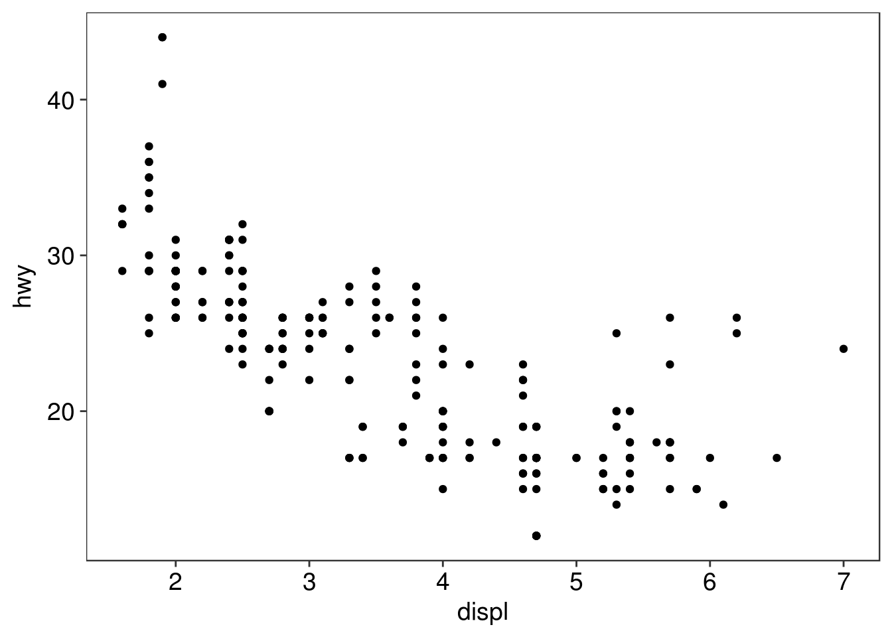

Test for Rmd Files
In this post, I describe the importance of persistent plots while carrying out a analysis. A case is made for simpler and persistent plots and the process to create the plots is demonstrated with an example. Finally, a package is created to stitch things together in a coherent fashion.
With the amount of available options in R today to create plots, it is easy to get distracted and miss the point of using plots in first place - to bring to attention something unique about the data which otherwise could be difficult, if not impossible, just looking at the raw numbers.
library(ggplot2)
ggplot(mpg, aes(displ, hwy)) +
geom_point()